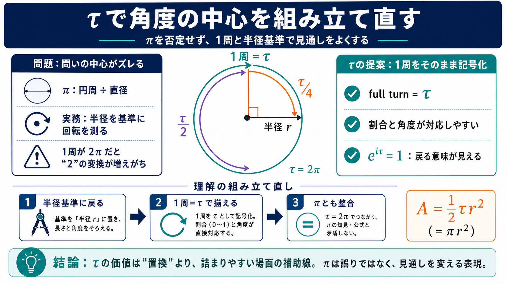

TAU DAY - June 28, 2026 - National Today
Tau Day, celebrated June 28, champions the mathematical constant tau (τ) as a more intuitive alternative to pi (π). Disc…

Tau Day, celebrated June 28, champions the mathematical constant tau (τ) as a more intuitive alternative to pi (π). Disc…
[Log In](https://www.facebook.com/login/device-based/regular/login/?login_attempt=1&next=https%3A%2F%2Fwww.facebook.com%…
# TAU: THE NEW PI. A former University of Utah math professor is the founder of a movement that has proposed τ (tau), or…
# The Tau Manifesto. ## 1 The circle constant. *The Tau Manifesto* is dedicated to one of the most important numbers in …
Some mathematicians celebrate Tau Day, which falls on June 28th. This date is associated with the number π (pi).